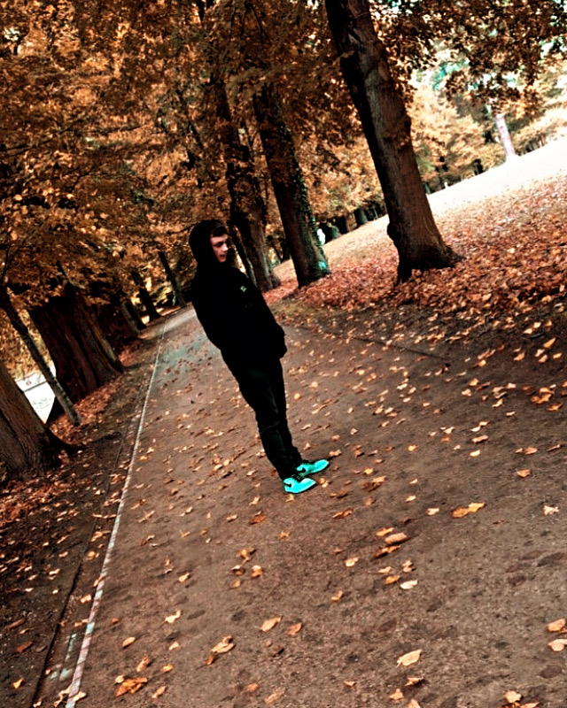

Moja pierwsza strona

Siema weszłeś na moją pierwszą strone internetową.
Dziękuje za Odwiedziny!❤️
Pozwól że cię oprowadze po moim krulestwie HTML.
Więc tak aby dowiedzieć się czegoś o mnie zapraszam do zakładki "O mnie".
Jeżeli chcesz zobacyć zdjęcia czegoś co jest moim chobby zapraszam do "Hobby".
Kod do tej strony inernetowej zobaczysz w formie ss w zakładce "Opis strony" nie będzie to cały kod tylko poszczegulne jego fragmęty.
Mam nadzieje że podoba ci się mój pierwszy projekt w takiej wersji. oczywiście wiem że może być jeszcze lepiej i będe starał się donrzyć do ulepszania mojej wiedzy wraz z tą stronką.
Dziękuje za odwiedziny i życze miłego dnia.🙃